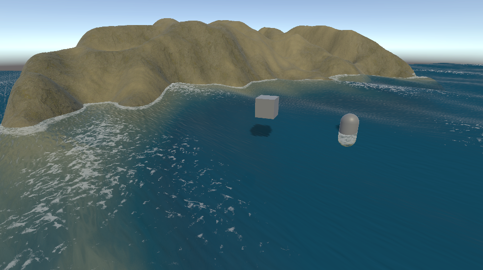

Water Surface Shader

Overview
A URP ocean water shader for Unity built from scratch, featuring wave simulation using Gerstner waves, depth-based colour blending, foam, refraction, and shadow distortion. Designed to look physically plausible without relying on any third party assets or post-processing effects.
This was created following the Graduation work to better understand the principles of realistic water rendering in real-time applications. Still an ongoing project, with room for improvements.
Gerstner Waves Implementation
The core of the water simulation uses a simplification of Gerstner waves to create realistic wave displacement. Each wave is composed by direction (x,y), steepness (z), wavelength (w), speed and then combined.
float WaveHeight(float4 w, float3 p, float t)
{
float2 d = normalize(w.xy);
float k = TWO_PI / w.w;
float c = sqrt(9.81 / k) * _WaveSpeed;
float A = (w.z / k) * _WaveStrength;
return A * sin(k * dot(d, p.xz) - c * t);
}The vertex shader applies all four wave displacements and passes wave height (posWS.y) to the fragment shader.
Varyings vert(Attributes IN)
{
Varyings OUT;
float3 posWS = TransformObjectToWorld(IN.positionOS.xyz);
float t = _Time.y;
float h = WaveHeight(_WaveA, posWS, t)
+ WaveHeight(_WaveB, posWS, t)
+ WaveHeight(_WaveC, posWS, t)
+ WaveHeight(_WaveD, posWS, t);
posWS.y += h;
OUT.waveHeight = h;
OUT.positionWS = posWS;
OUT.positionCS = TransformWorldToHClip(posWS);
OUT.screenPos = ComputeScreenPos(OUT.positionCS);
return OUT;
}Gallery

Links